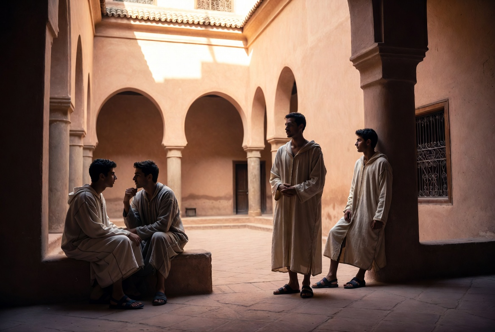

Fraîcheur naturelle
Le patio comme cheminée d'air — murs épais, ombre, humidité. Aucune climatisation mécanique.

Bien avant la climatisation, l'architecture du riad savait rafraîchir sans consommer. Le principe est simple et éprouvé depuis des millénaires : un patio ouvert au ciel, entouré de pièces hautes et de murs épais en pisé ou en brique crue, crée un effet de cheminée — l'air chaud s'élève et s'évacue par le haut, tandis que l'air plus frais circule au niveau du sol.
Malqaf — la tour qui capture le vent
Les Arabes nomment ce principe malqaf (ملقف, « le capteur »). On en trouve la trace dès l'Égypte pharaonique — la maison de Neb-Amon, vers 1300 av. J.-C., en porte déjà le dispositif. L'époque islamique reprend et affine cette technique, la diffusant de l'Irak vers le Levant et l'Égypte.
Pour humidifier et rafraîchir davantage l'air capté, les bâtisseurs y associent souvent le salsabīl (سلسبيل) — cette même lame d'eau sur marbre que l'on retrouve dans le patio du Riad. Un exemple bien documenté : la maison de Muhib al-Dîn al-Shâfiʿî al-Muwaqqiʿ, au Caire, vers 1350, où malqaf, salsabīl et lanterne forment un seul système de circulation d'air.
En Perse et dans le Golfe, ce même principe prend une autre forme : le badgir (بادگیر), tour multidirectionnelle plutôt qu'orientée vers un seul vent dominant — une variante du même geste architectural, né du même besoin. C'est la même culture persane qui donne au jardin du Riad sa géométrie en croix : l'air et l'eau, deux formes d'une même intelligence du climat.
مُفْضٍ إِلى حَرِّ الهَجيرِ وَنارُهُ
بَردٌ عَلَيكَ وَإِن غَلى وَسَلامُ
« Menant à la chaleur brûlante de midi — dont le feu devient, pour toi, fraîcheur et paix, même à l'ébullition. »
— Ibn Darrāj al-Qasṭallī, poète andalou (Xe–XIe s.)
L'ombre portée, l'eau du bassin, la végétation : chaque élément contribue. Aucun appareil mécanique. La fraîcheur est un résultat de la forme, non de la machine.
Au Riad Al-Uns, ce principe est respecté et renforcé : orientation, proportions, matériaux — la maison respire.